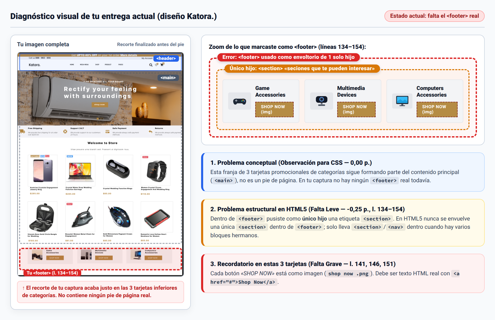
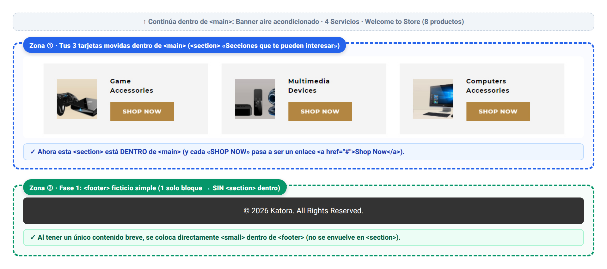
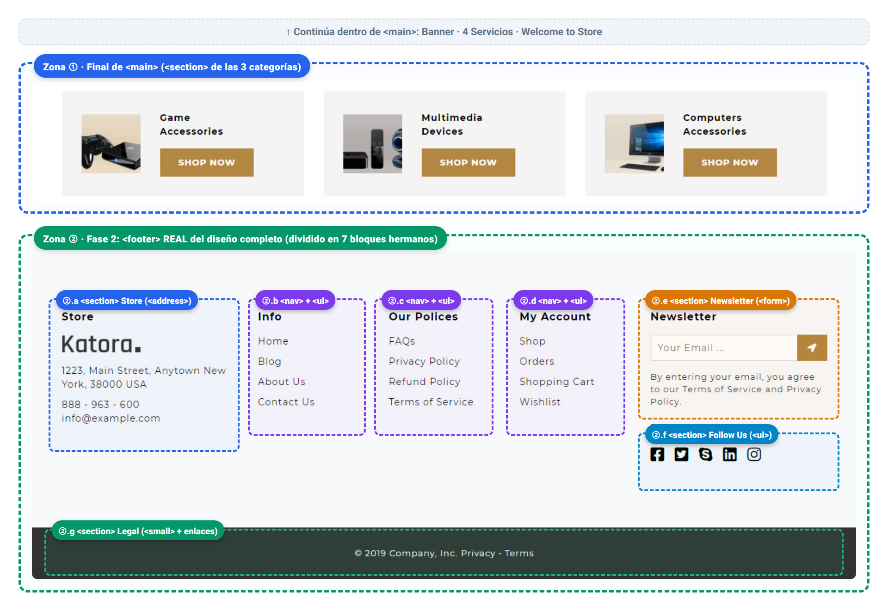
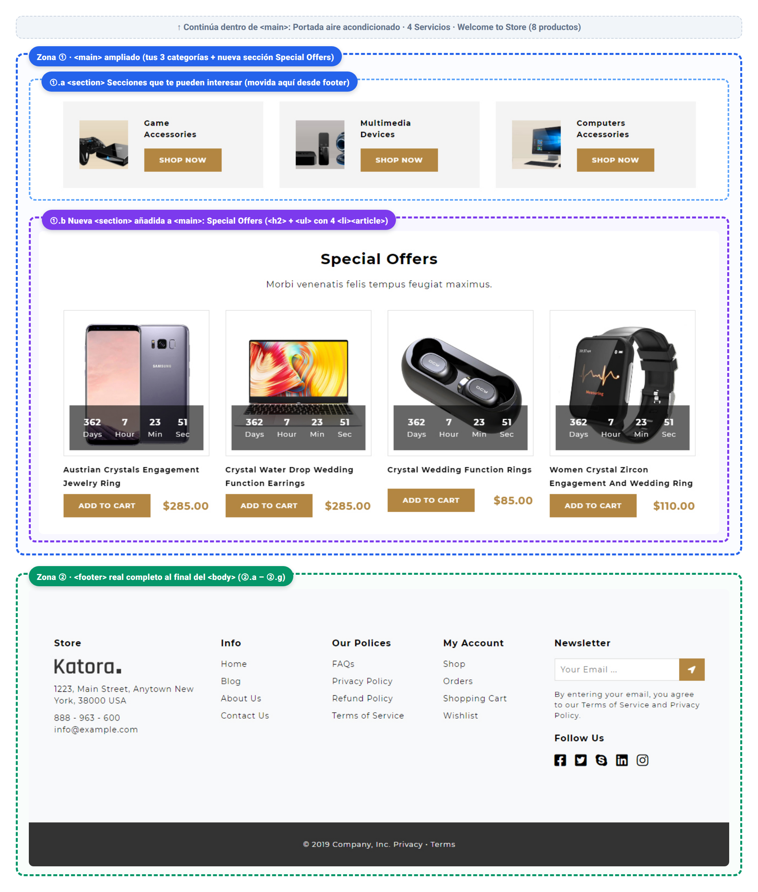

DIW · CFGS DAW · UD1Aclaración: <footer> vs <main>
¿Qué pasa exactamente con el <footer> de tu práctica (Katora.)?
En tu informe tienes dos anotaciones relacionadas con el final de tu archivo: una observación para la parte de CSS (no tienes un pie de página real) y una falta leve (-0,25 p.) en las líneas 134–154. Aquí tienes explicado paso a paso qué ocurre en tu código y cómo se corrige en tres fases progresivas apoyándonos en el diseño completo de la plantilla.
1 · Visión general
Los dos problemas que ocurren al final de tu código
Si miramos de forma esquemática lo que pusiste en las últimas líneas de tu entrega, se ve enseguida por qué hay dos comentarios distintos sobre ese mismo fragmento:
Esquema de tu código actual (por qué está mal)
<!-- ... resto de <main> ... -->
</main> <!-- ❌ Error A (Observación): cierras <main> antes de tiempo -->
<footer> <!-- ❌ Estas 3 tarjetas NO son un footer, son parte de <main> -->
<section> <!-- ❌ Error B (Leve -0,25 p.): 1 sola <section> dentro de <footer> -->
<h2>seciones que te pueden interesar</h2>
<article>... Game Accessories + <img> Shop Now ...</article>
<article>... Multimedia Devices + <img> Shop Now ...</article>
<article>... Computers Accessories + <img> Shop Now ...</article>
</section>
</footer>
A · Observación (0,00 p., para CSS)
En realidad NO tienes <footer>
La captura que entregaste se corta antes de llegar al pie real de la web. Cogiste una sección normal de categorías promocionales (Game Accessories, Multimedia Devices, Computers Accessories) y la metiste dentro de <footer> solo porque estaba abajo en la imagen. Esa sección pertenece al <main>; para CSS necesitas añadir un <footer> de verdad y acordar conmigo alguna sección más para completar la página.
B · Falta Leve (-0,25 p., l. 134–154)
Un <footer> con 1 única <section> dentro
Independientemente de qué contenido hubiera ahí, metiste una única etiqueta <section> hija dentro de <footer>. En HTML5 nunca se usa <footer> como envoltorio de una sola <section>, porque ese bloque único ya es el propio <footer>. Solo se subdivide en <section> o <nav> cuando el pie tiene varios bloques hermanos distintos.
Recordatorio de la Falta Grave en esas tarjetas (l. 141, 146, 151): los botones «Shop Now» no deben ir como imágenes (<img src="katorapepecap/shop now .png">), sino como enlaces de texto HTML: <a href="#">Shop Now</a>.
2 · Diagnóstico completo
Tu imagen y tu código entregado (líneas 132–156)
Aquí puedes ver dónde acaba exactamente la imagen que utilizaste y compararlo línea a línea con tu HTML completo de ese bloque.

A la izquierda, tu captura completa termina en las 3 tarjetas inferiores de categorías (sin pie de página debajo). A la derecha, el detalle de las líneas 134–154 muestra el bloque metido erróneamente como único hijo <section> de un <footer>.
Tu código literal entregado (líneas 132–156)
</main> <!-- l. 132: cierra <main> demasiado pronto -->
<footer> <!-- l. 134: en realidad no es un pie de página -->
<section> <!-- l. 135 (Leve -0,25 p.): único hijo de <footer> -->
<h2>seciones que te pueden interesar</h2>
<article>
<img src="katorapepecap/mandoyplay.png" alt="imagen de game accesories">
<h3>Game Accessories </h3>
<img src="katorapepecap/shop now .png" alt="imagen show now">
</article>
<article>
<img src="katorapepecap/webcam.png" alt="imagen de Multimedia Devices">
<h3>Multimedia Devices </h3>
<img src="katorapepecap/shop now .png" alt="imagen show now">
</article>
<article>
<img src="katorapepecap/monitor.png" alt="imagen de Computers Accessories ">
<h3>Computers Accessories </h3>
<img src="katorapepecap/shop now .png" alt="imagen show now">
</article>
</section>
</footer>
</body>
Línea 132
Cierras </main> dejando fuera una sección que sigue siendo promoción de categorías de la tienda.
Líneas 134–135 y 153–154<footer> envuelve únicamente una etiqueta <section>. Si un pie tuviera una única agrupación, sobraría esa <section> interna.
Líneas 141, 146 y 151
Cada «Shop Now» usa <img> en lugar de un enlace HTML <a href="#">Shop Now</a>.
3 · Fase 1 de corrección
Fase 1: Mover la sección al <main> y crear un <footer> ficticio simple
Empecemos por lo básico sin cambiar aún el diseño: pasamos tu sección de las 3 categorías dentro de <main> (corrigiendo los enlaces Shop Now) y ponemos debajo un <footer> ficticio mínimo que solo contenga el copyright. Fíjate bien en cómo al haber un único bloque simple dentro de <footer>, NO se envuelve en ninguna etiqueta <section>.

Zona ① (azul): las 3 categorías ya están dentro de <main>. Zona ② (verde): un <footer> sencillo con un único dato legal se escribe directamente con <small> dentro de <footer> (sin <section>).
✅ Fase 1 — Categorías dentro de <main> + <footer> simple solo con copyright
Fase 2: Incorporar el <footer> real de la plantilla completa
Ahora sustituimos ese pie mínimo de la Fase 1 por el <footer> real del diseño completo de Katora. Observa la diferencia estructural: aquí el <footer> tiene 7 bloques temáticos hermanos distintos (contacto de tienda, 3 columnas de enlaces, newsletter, redes sociales y franja legal), así que en este caso sí es obligatorio dividirlo en <section> y <nav> independientes.

Recuadros del <footer> real: ②.a datos de la tienda (<section> + <address>), ②.b, ②.c y ②.d menús de navegación (<nav><ul>), ②.e boletín (<section> + <form>), ②.f redes sociales (<section><ul> por ser 5 iconos) y ②.g barra legal (<section> + <small>).
✅ Fase 2 — <footer> real completo correspondiente a los recuadros ②.a – ②.g
②.b, ②.c y ②.d en <nav>
Como cada columna agrupa 4 enlaces de navegación (> 3 hermanos), todas usan <ul><li><a href="#">...</a></li></ul> y su encabezado <h2>.
②.e en <form> y ②.f con enlaces
El input del newsletter lleva su <label for="footer-newsletter"> vinculado al id y su <button type="submit"> dentro del formulario; los 5 iconos sociales van como enlaces en lista <ul>, nunca como imágenes sueltas.
5 · Fase 3 de ampliación
Fase 3: Añadir otra sección al <main> (por ejemplo Special Offers) antes del <footer>
Como te indiqué en la observación del informe, el recorte inicial que entregaste se quedaba un poco justo para trabajar luego el CSS. El último paso consiste en ampliar el <main> incorporando otra sección del diseño —por ejemplo Special Offers (①.b)— justo después de las 3 categorías (①.a), dejando el <footer> real completo (②) al cierre del <body>.

Estructura final para CSS: dentro de <main> conviven tu sección de 3 categorías (①.a) y la nueva sección Special Offers (①.b, con 4 artículos en <ul>); fuera de </main> cierra el documento el <footer> real completo (②).
✅ Fase 3 — Código completo de <main> ampliado (①.a + ①.b) y <footer> real (②)
Mueve las 3 tarjetas de categorías (Game Accessories, Multimedia Devices, Computers Accessories) dentro de <main> y sustituye sus imágenes Shop Now por enlaces <a href="#">Shop Now</a>.
Añade dentro de <main> otra sección más del diseño (como Special Offers con su lista <ul> para las 4 tarjetas) para completar la estructura.
Coloca debajo de </main> el <footer> real de Katora. dividido en sus bloques hermanos (Store, Info, Our Polices, My Account, Newsletter, Follow Us e Información legal).
Recuerda la regla general: si un <footer> tuviera solo un bloque sencillo (como en la Fase 1), no lo metas dentro de un único <section>; solo se usa <section> o <nav> cuando el pie contiene varios bloques hermanos.